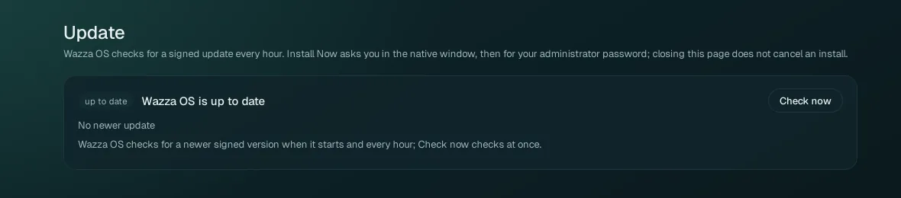

The Update page
Wazza OS checks for a new signed version when it starts and every hour. When one is out, you download it, install it with your administrator password, and restart Wazza OS. Your VMs, Chats and settings stay.
Open the Update page#
Click Update in the Home menu (open Home with the + at the end of the tab strip). When an update is waiting, a notification says so too (Home › Notifications, filter Updates).

Check now checks at once instead of waiting for the next hourly check. The page says Wazza OS is up to date only after a signed update list was really read and holds nothing newer.
Install an update#
When a newer version exists, the page shows it with its version, its date, and the changes since your version (Technical changes, Known issues). Click Download Update.
Wazza OS downloads the package and checks it against its signature (Downloading and verifying the package, with the bytes downloaded). Cancel Download stops it. When it ends: Download complete and verified. Select Install Now to continue.
Click Install Now. A small confirmation window of Wazza OS asks you to confirm (Install Now, or Install Later to keep the download for later).
Your system asks for your administrator password (the installation goes through your system's package manager). The page follows the install: copying the verified package, checking it against its signed hash, installing, setting up the new version, with a percentage.
When the page says Installed. Restart Wazza OS to finish., click Restart Wazza OS. Wazza OS closes and starts again on the new version; your tabs come back.
Coming from alpha 2 or earlier, the first start of the new version says once: Wazza OS now uses wazza.ai: sign in again. Earlier versions signed you in on a test website by default; sign in to your Wazza OS account again in Home › Sign in.
Closing the Update page does not cancel an install, and the update is installed exactly once. After the restart, Settings › General › About shows the new version under both Running and Installed.
Install the new package over the old one, exactly like the first install (Install › Update). Never remove the old package first: removing it deletes your Wazza OS data.
What the messages mean#
| The page says | What it means, what to do |
|---|---|
| Wazza OS is up to date | No newer version. Nothing to do. |
| Wazza OS has not checked for updates yet / Not checked yet | The first check of this start has not run yet. Click Check now. |
| The update server could not be reached (offline, or it timed out). | No Internet, or the server did not answer. Check your connection, then Check now. |
| The update server is limiting requests from this computer. Try again in a minute. | Too many checks in a short time. Wait a minute. |
| A download failed a moment ago: Download Update is available again after a short wait | Wazza OS waits 30 seconds, then 2 minutes, then 10 minutes between attempts. The button comes back by itself. |
| Four downloads completed this hour | A limit against loops: Download Update comes back after the hour. |
| The package on the server is not the size its signed release names. Nothing was installed. | The download did not match its signature, so it was refused. Try again later. |
| This version is no longer published: a newer one replaced it while it downloaded. | Wazza OS checks for the newer one by itself. Download that one. |
| Downloaded and verified, not installed yet: select Install Now. | The download is ready; click Install Now when it suits you. |
| Install Now was not confirmed. The update stays downloaded and verified: select Install Now again. | The confirmation window was closed or answered Install Later. Nothing is lost. |
| The confirmation window got no answer within 30 seconds. | Click Install Now again and answer the window. |
| Wazza OS's window was not in front, so the confirmation could not be shown. | Bring Wazza OS to the front, click Install Now again. |
| Waiting for the administrator password, then installing | Type your password in the system's prompt. |
| Installed. Restart Wazza OS to finish. | Click Restart Wazza OS. |
| Wazza OS could not restart by itself | Quit Wazza OS and start it again from your app menu. |
| The original installation result is unknown. Check status; do not repeat it. | Click Check Installation Status: Wazza OS reads what your package manager installed. Do not install a second time. |
| Your version is not in the update history, so the list of changes since it may be incomplete. | Only the list of changes is affected; the update itself is fine. |
Still stuck: Troubleshooting › Updates.